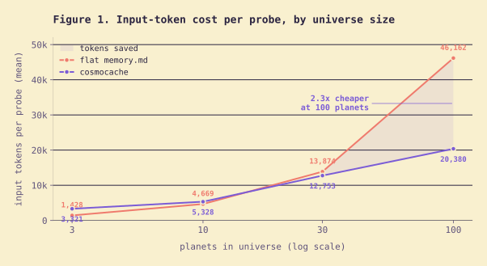

cosmocache replaces the flat memory.md with a small
cosmology: planets of knowledge, named
creatures who hold sub-expertise, and
Enigma the One — an ancient oracle who keeps a tiny
glossary that routes you to whatever the session actually needs.
Somewhere between sessions, there is a void. Every new context starts
empty; every old insight slips out with the tide. cosmocache is a
cosmology that pushes back against that forgetting.
At the center sits Enigma the One, the hooded oracle
from the illustration above. Enigma does not know everything — Enigma
knows where. Around Enigma orbit the
planets: planet-react,
planet-sql, planet-devops, and any other
domain your work gives birth to. Each planet is home to one or more
creatures: Jimbo the React-tor, Sally the SQLite,
Grom the Deployer. Silly names, serious notes. When a paradigm shifts,
a new generation is tagged and the old one is preserved.
“I am the keeper of names. Ask, and I will point the way.”
— Enigma the One, enigma/glossary.md
Inspired by Andrej Karpathy’s LLM-wiki /
knowledge-base-as-context idea, reshaped around Claude Code’s
SessionStart hook and slash commands.
// problem ↔ solution
Flat memory rots. A universe scales.
memory.md
Everything, every time.
Every fact loaded into every session.
Grows monotonically. Context pressure grows with it.
No routing — the model re-reads unrelated history.
No generations — stale patterns are indistinguishable from current ones.
Edits are append-only and human-curated.
cosmocache
Index small. Details on demand.
Only Enigma’s compact glossary is injected at session start.
Claude routes to one planet and reads only its files.
Creatures carry distilled wisdom + an append-only journal.
Generations snapshot paradigm shifts without blowing away history.
Writes happen through /universe remember, by the agent, with structure.
// how it works
Four moves, every session.
01
A session starts.
The Claude Code SessionStart hook fires.
02
Enigma’s glossary loads.
Roughly a couple of kilobytes: planet names, domains, keywords, last-visited dates.
03
Claude routes the question.
User mentions React? planet-react. SQL? planet-sql. Invoke /universe recall for deeper lookups.
04
Only needed files are read.
Creature journals, distilled wisdom, the current generation — never the whole cosmos at once. /universe remember writes new notes back when the session ends.
// proof (phase 2, full scaling eval)
Parity at 3 planets. 2.5× cheaper at 100.
2.5×
fewer input tokens at 100 planets
—
18k
cc vs 46k flat
The phase-2 eval ran 4 scale tiers with real + synthetic universes,
comparing cosmocache (glossary + lazy planet loads) against a flat
memory.md that dumps every planet every time.

Rendered from the full phase-2 eval results. Log x-axis.
tier
planets
cc acc
flat acc
cc tokens
flat tokens
real
3
0.98
0.98
3,321
1,428
small
10
0.67
1.00
4,251
4,669
medium
30
0.89
1.00
12,059
13,874
large
100
0.82
1.00
18,258
46,162
Token story: the gap widens with scale. At 100
planets, flat memory.md burns 46,162
input tokens per probe — every question drags the entire cosmos into
context. cosmocache reads the glossary plus the planet it routed to,
and lands at 18,258. That’s the point of the system.
Honest caveat: synthetic tiers (10/30/100) are
programmatic copies of the 3-planet real seed. Flat memory wins
accuracy on them partly because duplicated text rewards blind
text-matching — not routing. Real, distinct planets (the
real tier above) show true parity at 0.98 / 0.98.
We’re claiming a token-cost win at scale, not an accuracy one.
Raw run data on github
· 2.39M input tokens · ~$36 on claude-opus-4-6 · 25 probes × 4 tiers.
Each creature lives on a planet. Each is a named sub-expert with
a silly handle, a distilled-wisdom block, and an append-only journal.
Enigma never pretends to know their craft — she just knows who to ask.